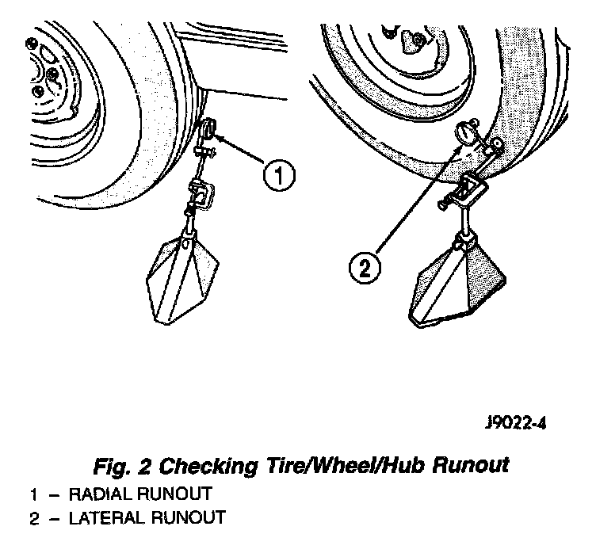
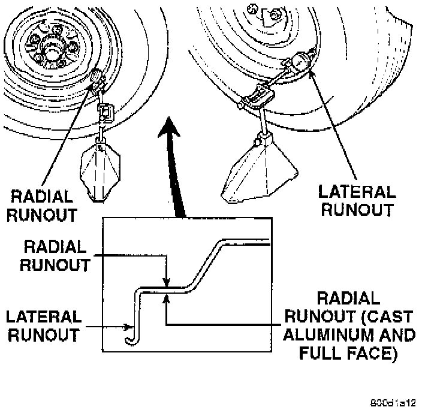

Runout
Fig. 2:

TIRE AND WHEEL RUNOUT
- Radial runout is the difference between the high and low points on the tire or wheel.
- Lateral runout is the wobble of the tire or wheel.
- Radial runout of more than 1.5 mm (0.060 inch) measured at the center line of the tread may cause the vehicle to shake.
- Lateral runout of more than 2.0 mm (0.080 inch) measured near the shoulder of the tire may cause the vehicle to shake.
- Sometimes radial runout can be reduced. Relocate the wheel and tire assembly on the mounting studs (See Method 1). If this does not reduce runout to an acceptable level, the tire can be rotated on the wheel. (See Method 2).
METHOD 1 (RELOCATE WHEEL ON HUB)
- Check accuracy of the wheel mounting surface; adjust wheel bearings.
- Drive vehicle a short distance to eliminate tire flat spotting from a parked position.
- Make sure all wheel nuts are properly torqued.
- Relocate wheel on the mounting, two studs over from the original position.
- Re-tighten wheel nuts until all are properly torqued, to eliminate brake distortion.
- Check radial runout. If still excessive, mark tire sidewall, wheel, and stud at point of maximum runout and proceed to Method 2.
METHOD 2 (RELOCATE TIRE ON WHEEL)
- Rotating tire on wheel is particularly effective when there is runout in both tire and wheel.
- Remove tire from wheel and mount wheel on service dynamic balance machine.

- Check wheel radial runout and lateral runout.
- STEEL WHEELS: Radial runout 0.040 inch, Lateral runout 0.045 inch.
- ALUMINUM WHEELS: Radial runout 0.030 inch, Lateral runout 0.035 inch.
- If point of greatest wheel lateral runout is near original chalk mark, remount tire 180 degrees. Recheck runout, Refer to match mounting procedure.